Đây là bài mình viết cũng đã trình bày trên blog kaopiz.kipalog của công ty.
Vẫn là một bài toán với Dynamo. Cơ mà lần này là việc lưu trữ Log. Ở đây theo mình log tới từ nhiều nguồn. Ví dụ như: User action Log, Info Log, Error Log, Monitor Resources Log… Bài toán của dự án mình là lưu log data của hệ thống. Data hiện tại đang được lưu ở DynamoDB. Data này rất đặc thù là phải lưu đầy đủ. Cứ 1 giây là lại lưu data mới rồi. Mục đích lưu lại cũng nhằm để truy vết khi có vấn đề, để phân tích data. Data này lại có đặc thù nếu có bug thì cần truy được luôn, nhưng để lâu thì cũng k đụng đến. Tất nhiên là không được xoá nó đi mất hẳn. Vì khi cần phân tích thì phải tập hợp đó lại. Từ đó mình tìm đến usecase này của AWS (Automatically Archive Items to S3 Using DynamoDB Time to Live (TTL) with AWS Lambda and Amazon Kinesis Firehose) từ đó trong quá trình cấu hình thì có tham khảo từ đây.
1. Solution
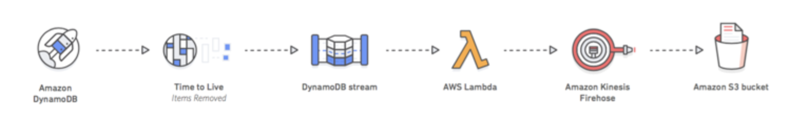
Giải pháp đưa ra là mình sẽ lưu tất cả data log ở trên vào DynamoDB. Có điều mình sẽ set Time To Live với expire là 30 ngày. Khi mình enable Dynamo Stream. thì mỗi record khi đủ 30 ngày sẽ bị xoá (backup trong 24h) và chính data đó cũng được deliver tới Firehose bằng lambda function. Khi data nạp đủ 1 gói (định nghĩa ở firehose, ví dụ là 5MB) hoặc interval qua xx seconds thì Firehose sẽ lưu vào S3.
2. Practical
Chúng ta cần thực hành các bước sau:
- Activate TTL and DynamoDB Streams trong các DynamoDB table của bạn.
- Tạo Firehose delivery stream để load data tới S3.
- Tạo Lambda function để poll data từ DynamoDB stream và deliver các records từ streams tới Firehose tạo ở trên.
- Kiểm tra xem ứng dụng hoạt động có ổn định
2.1. Enable DynamoDB TTL và DynamoDB streams
Chắc chắn là bạn đã chuẩn bị sẵn Dynamo table rồi nhé. Mình khuyên bạn lên lựa chọn option on-demand nếu bạn không có plan cụ thể cho Dynamo để cho đỡ tốn xiền. Ngoài lề vậy thôi. giờ tìm tới cái table và bắt đầu nhé.
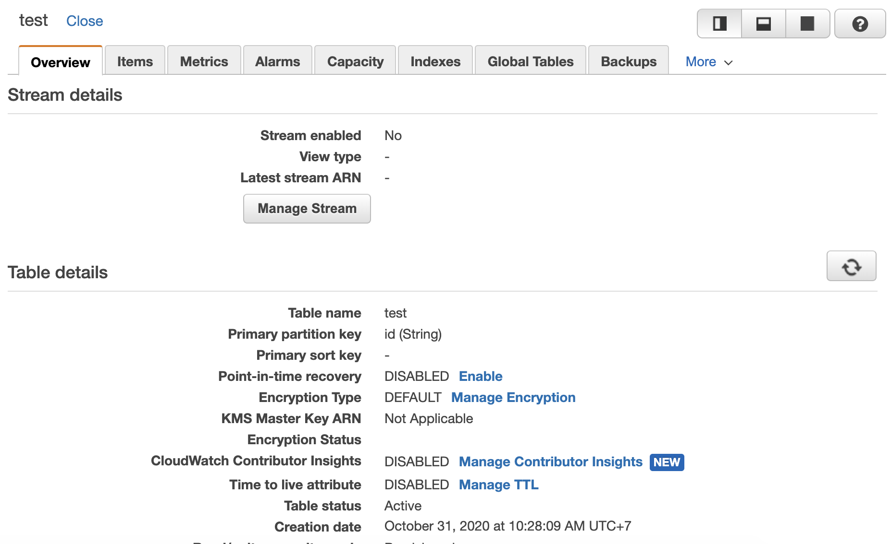
Click vào Dynamo Stream để enable stream nhé:
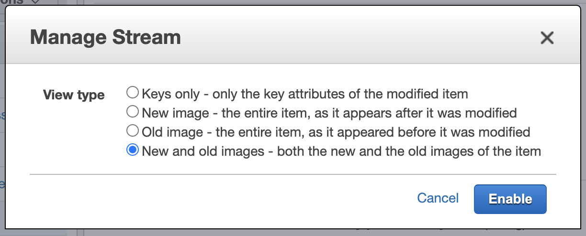
Tiếp theo click vào Manage TTL để enable Time To Live nhé.
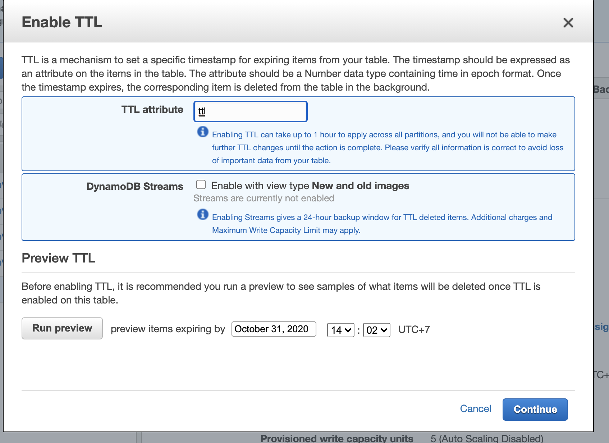
Thực ra bạn cũng có thể enable Dynamo Stream ở luôn đây. Mình chon ttl là field để xác định expire time. Ví dụ mình lưu 1 record có ttl là second time của 30 ngày sau. Thì đến 30 ngày sau record sẽ expire.
2.2. Tạo Firehose delivery stream để load data tới S3.
Trước khi thực hiện bước này bạn phải đảm bảo đã tạo 1 S3 bucket phục vụ việc lưu log data nhé.
Tiếp theo là tìm tơi Kinesis service của AWS. Ở đây chung ta sẽ tạo Delivery streams (tên gọi khác là Amazon Kinesis Firehose). Có một lưu ý là chúng ta có bao nhiêu table lưu log thì phải tạo bấy nhiêu Deliver Stream. Nhớ tuỳ biến destination lưu trong S3 ở các prefix khác nhau.
- Bắt đầu create Delivery Stream. Nhập tên deliver stream:
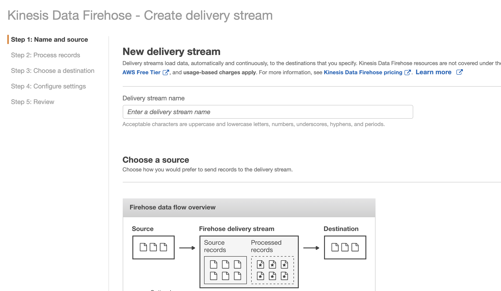
ở đây mình chọn source là Direct PUT or other source. Mình cũng không thực hiện encrypt data vì case của mình không cần thiết.
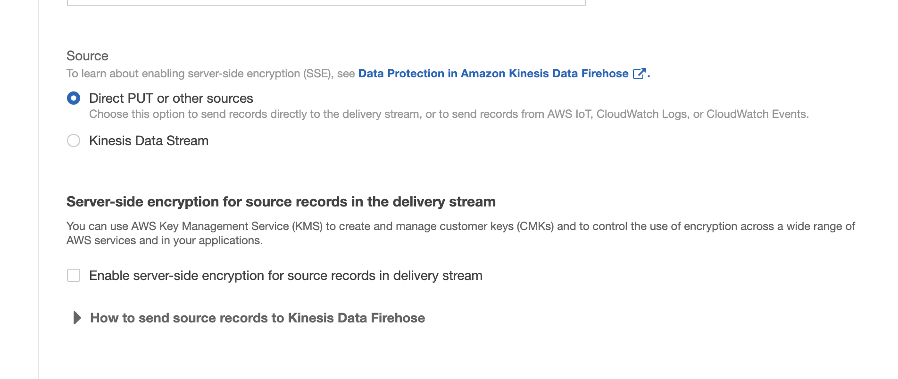
- Ở case Process Record, liên quan đến format, convert lại record. ở đây mình k có nhu cầu nên disabled hết. Nếu bạn có nhu cầu hãy tìm hiểu thêm nhé https://docs.aws.amazon.com/firehose/latest/dev/data-transformation.html.
- Chọn Destination. Ở đây mình chọn cái S3 vừa tạo nhé.
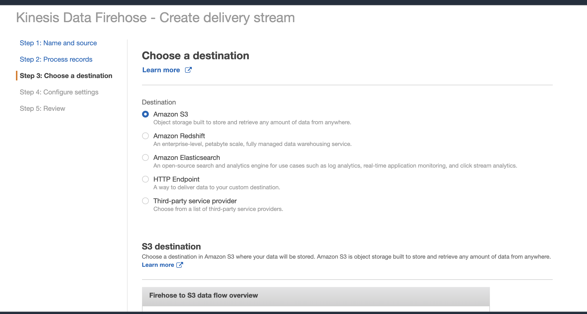
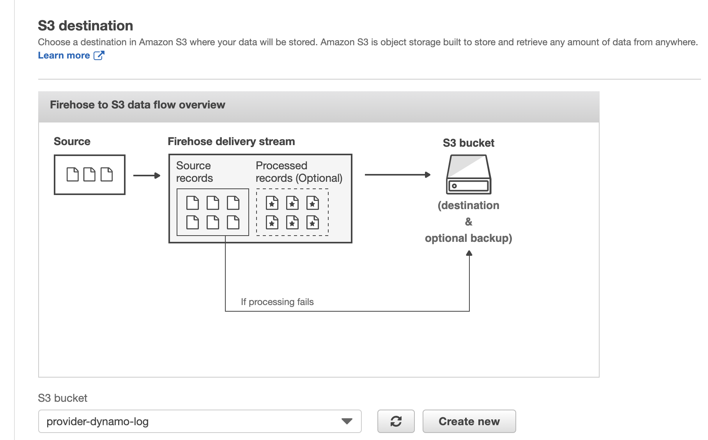
Mỗi table mình sẽ tạo prefix như dưới đây
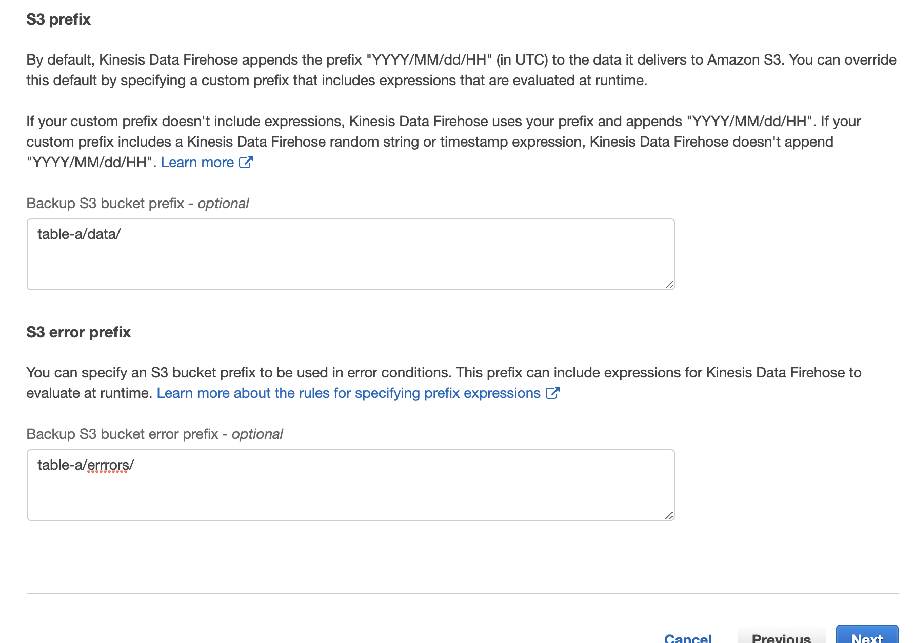
- Cuối cùng là phần Config setting. Cái này khá quan trọng vì nó liên quan tới file data sẽ lưu trong S3 như thế nào. Có thể các bạn nghĩ việc gì phải sử dụng firehose. Mỗi lần data expire thì dùng lambda function để lưu thẳng s3. Xem nào vậy nếu có 1 triệu record thì sẽ có 1 triệu object ở S3. Việc quản lý log bắt đầu thấy loạn. Từ đó sinh ra Firehose. Nhiệm vụ là stream data để lưu vào S3. Nhưng nó sẽ lưu theo các buffer. Kiểu như mình set ở dưới, khi data expire đủ 5MB hoặc sau 1 khoảng thời gian 300s thì sẽ gom hết các data đó vào 1 buffer rồi lưu vào S3. Vậy là giảm cơ số Object rồi.
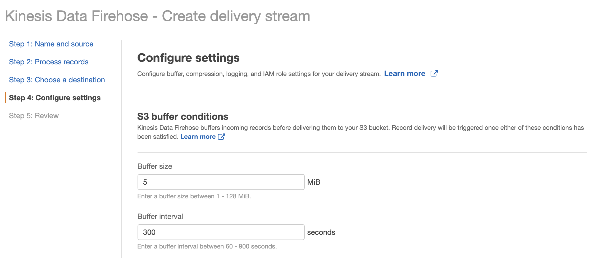
Ngoài ra các object khác mình để default, ví dụ như error log sẽ được enable.
Phần tạo role attach vào Firehose để tương tác với S3. Có thể để mặc định tự tạo
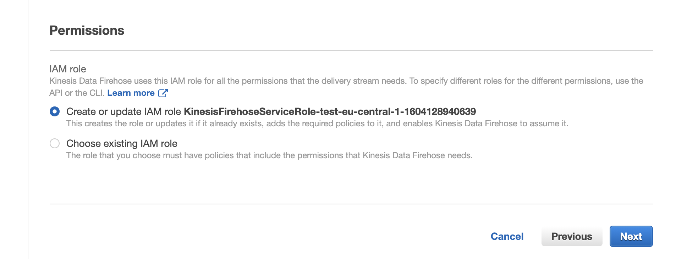
Hoặc bạn có thể tạo role trước để attach.
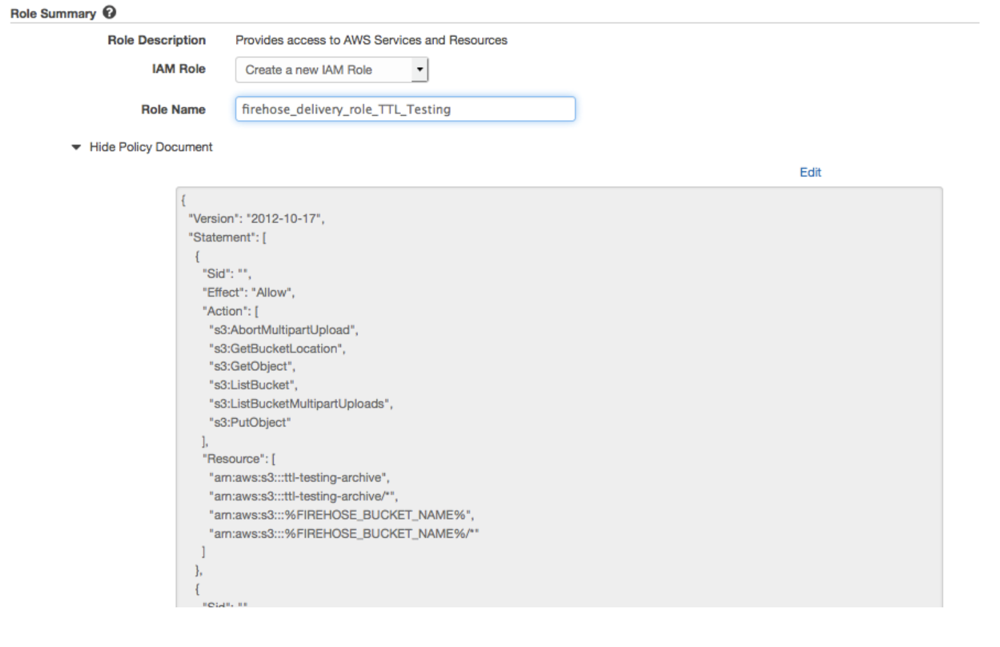
OK và thế là tạo được Deliver Stream.
2.3. Cấu hình Lambda
Code bạn có thể clone về từ đây https://github.com/awslabs/lambda-streams-to-firehose , tác giả là lanMeyers. Cái source này có vài advanced features . Nhưng trong bài này chúng ta chỉ sử dụng basic function của nó thôi. Mục đích là lấy tất cả messages từ dynamo stream và forward tới Firehose Delivery Stream.
This example uses the lambda-streams-to-firehose project, written by my colleague Ian Meyers, available in this GitHub repository. It contains several advanced features. However, this example uses the base functionality: it takes all messages in the DynamoDB stream and forwards them to the Firehose delivery stream.
- Clone command
1 | git clone https://github.com/awslabs/lambda-streams-to-firehose.git |
- Ok, giờ tìm đến file index.js. update các thông số sau.
UpdateUSE_DEFAULT_DELIVERY_STREAMSthành false vì mình không sử dụng default deliver stream.
Ở deliveryStreamMapping, mình liệt kê key là các Dynamo table và value là các Deliver Stream tương ứng. Chỉ cần ghi name của nó thôi nhé.
1 | /* |
Thực hiện build code (cài đặt package và compress thành file zip). Access vào root folder của code và thực hiện
./build.sh. File zip sẽ được sinh ra ở folderdist/. Nhớ chọn file mới build ra nhé, vì có mấy file build sẵn cẩn thận nhầm :DTạo Role cho lambda function
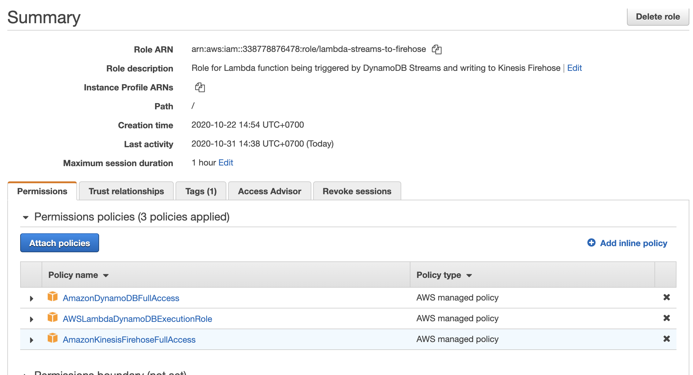
Bạn có thể giới hạn lại các policy cho security. Ở đây mình lười nên toàn dùng default.
- Bây giờ thì vào console tạo 1 lambda function với mấy lưu ý sau:
1 | - Chọn NodeJS |
2.4. Test
- Đầu tiên cần test Firehose Deliver Stream có hoạt đông. Vào Deliver Stream click Start sending demo data. Bạn sẽ chờ sao cho buffer đủ ngưỡng bạn setting. Ví dụ là 300s hoặc 5MB chẳng hạn. Sau đó vào S3 bucket kiểm tra log data.
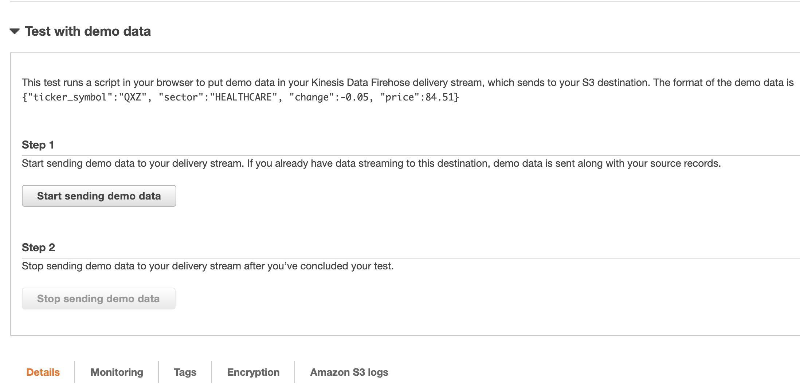
- Thêm mới data vào Dynamo table. Nhớ là khi create record cần phải append thêm trường
ttllà thời gian expire. Set expire tầm 1 2 phút thôi chẳng hạn. Sau khi tạo hiển thị được như thế này là ok.
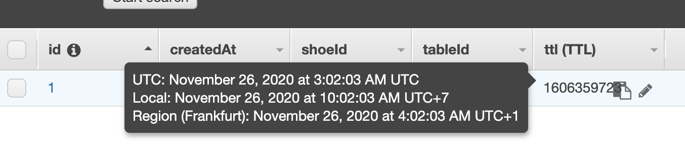
Sau đó đợi xem đến thời gian expire + thời gian buffer. Và vào kiểm tra trong S3 Bucket có log data không.
Nếu vẫn không có thì chắc chắn lỗi nằm ở Lambda function. tiếp tục step tiếp theo.
- Kiểm tra CloudwatchLogs của Lambda function xem có lỗi không
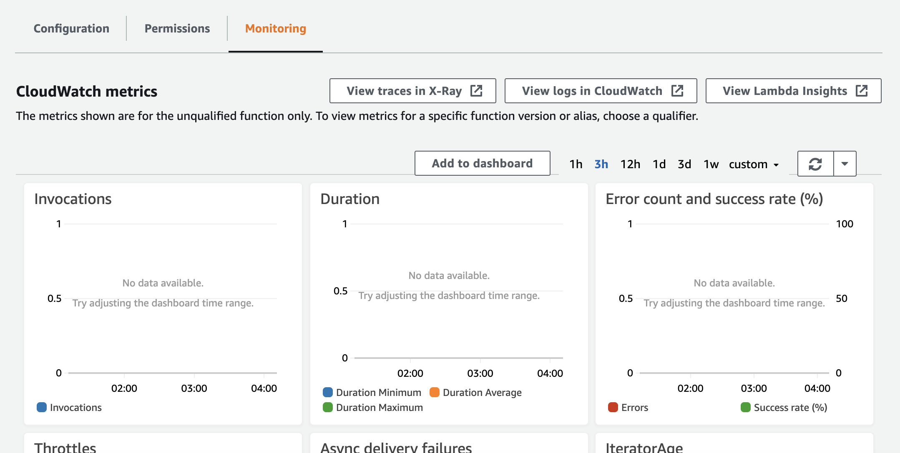
Thực ra với code version mới của repo trên thì việc điển deliveryStreamName ở file index.js là DDBStreamName: deliveryStreamName chứ không còn là DynamoDB Stream Name ARN : Kinesis Firehose Delivery Stream Name như hướng dẫn của aws blog mình tham khảo ở trên nữa. Nên nếu không đọc kỹ thì sẽ có bug xảy ra. Và lúc đó thì chúng ta chỉ cần dựa vào CloudwatchLogs để debug ra vấn đề thôi. :D
Kết luận
Với giải pháp trên, dự án mình đã giảm tải được lượng log data lưu trữ lớn trên dynamo (cost dynamo khá đắt). Hiện tại lượng lưu trữ trong 1 tháng nên ok. Với việc đẩy các log data tới S3. Khi nào cần sử dụng truy vết có thể dung AWS athena để query. Hoặc khi cần phân tích có thể import đống data đó lên ElasticSearch (Nơi lưu trữ log các thể loại khác nữa) để phân tích chẳng hạn. Cảm ơn mọi người đã đọc tới tận đây :D
Đây là Blog cá nhân của MinhHungTrinh, nơi mình chia sẻ, lưu giữ kiến thức. Nếu các bạn có góp ý, thắc mắc thì vui lòng comment bên dưới cho mình biết nhé. Kiến thức là biển sâu và mình luôn là người lắng nghe và ham học hỏi. Các vấn đề đặc biệt hoặc tế nhị mọi người có thể gửi email tới minhhungtrinhvn@gmail.com. Cảm ơn Mọi Người đã đọc Blog của mình. Yolo!